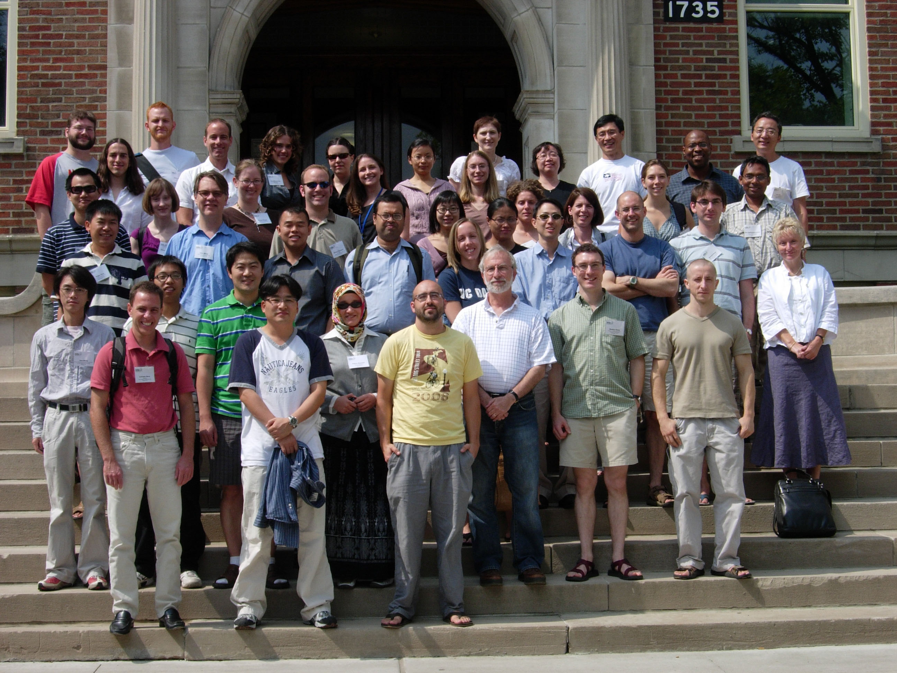

{kind=link}
{kind=link}
 Application of ecological and mathematical theory to cancer: new challenges,
NIMS, Daejeon, South Korea, May 12-15, 2014
Application of ecological and mathematical theory to cancer: new challenges,
NIMS, Daejeon, South Korea, May 12-15, 2014
|  |
|
Application of ecological and mathematical theory to cancer: new challenges,
NIMS, Daejeon, South Korea, May 12-15, 2014
|
Fun, Air trip, Per Diem, CBP, ) |
|
Visiting UK
Education/Position:
Visiting Faculty, Ohio State University, 2013-present
Assistant professor, Konkuk University, 2012-present
Assistant professor, University of Michigan, 2009-2012
Postdoctoral fellow, Mathematical Biosciences Institute, Ohio State University, 2006-2009
Ph.D, University of Minnesota, 2006 [Advisor: Hans G. Othmer]
Research Projects:
|
1. Cancer Microenvironment : Breast cancer modeling
|
2. Glioma invasion
|
3. Chaeok Yun (Hanyang University) |
|
4. miR-451-AMPK-mTOR-cell cycle
Mark Chaplain (Division of Mathematics, University of Dundee) |
5. Cell motility and cancer using Immersed boundary method approach
*Collaboration : - Sookkyung Lim (U of Cincinnati) - Wanho Lee (NIMS, South Korea) |
6. A hybrid model of tumor spheroid growth
*Collaboration : - Magda Stolarska (U of St. Thomas) -Hans Othmer (U of Minnesota) |
|
7. Virus Therapy
*Collaboration : - Avner Friedman (MBI) - Dr. Chiocca (M.D.), - Balveen Kaur Neurological Surgery, Ohio State University |
8. Tumor dormancy |
9. Asthma :
*Collaboration : - Hyung Ju Hwang (Dept of Math, Postech, Korea) - Yong Song Gho, Yoon-Keun Kim (Dept of Life Science, Postech, Korea) |
Last update : Dec, 2011